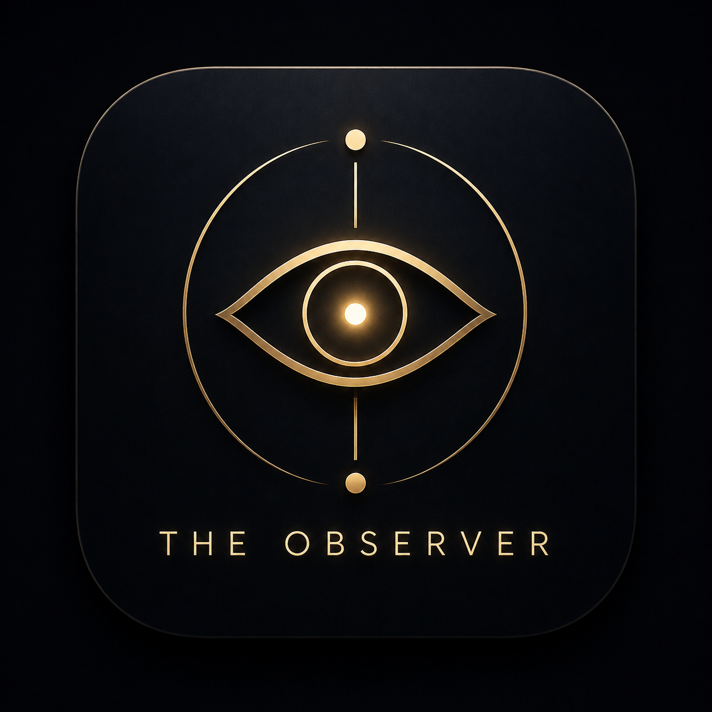

A reflection instrument
Access · $1 / month
Enter
One free session — try first
The Observer
The observer is already present.
Continue →
The Observer
Surface
What's present underneath your curiosity right now
Reflect →
Reflected
[ Go deeper ]
— The instrument has held what it can. —
The rest is yours.
Powered by Bhavé's Lab